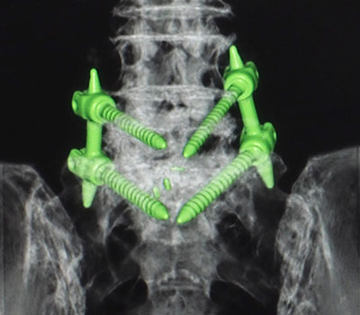

Спондилодез — это процедура, направленная на сращение (объединение) двух или более позвонков. Данная процедура не позволяет позвонкам смещаться и провоцировать боль. Цель этой процедуры состоит в ослаблении боли и предотвращении деформации и ослабления позвоночника.
Во время процедуры спондилодеза костный материал (трансплантат) размещается между двумя позвонками, что способствует их сращению. Для стабилизации позвоночника на время его заживления используются импланты: винты, шурупы, металлические пластины или стержни. Сама процедура фиксации позвоночника во время операции называется спондилосинтез. Спондилосинтез в качестве первичной стабилизации необходим для последующего спондилодеза. Наиболее часто для спондилосинтеза применяется транспедикулярная фиксация.
Эта процедура используется для лечения, помимо прочего, следующих состояний:
- Повреждение спинного мозга
- Грыжа межпозвоночного диска
- Аномальные искривления позвоночника, такие как сколиоз или кифоз
- Инфекции или опухоли позвоночника
- Спондилолистез
- Спинальный стеноз
Сообщите лечащему врачу:
- О любых имеющихся у вас типах аллергии.
- О всех принимаемых вами лекарствах, включая витамины, фитопрепараты, глазные капли, кремы и безрецептурные препараты.
- О любых нежелательных реакциях на средства анестезии, имевшие место у вас или членов вашей семьи.
- О любых имеющихся заболеваниях крови.
- О ранее перенесенных вами операциях.
- О любых имеющихся у вас медицинских состояниях.
- Если вы беременны или думаете, что можете быть беременны.
Каковы риски операции на позвоночнике?
Как правило, это безопасная процедура. Тем не менее, могут возникнуть осложнения, включая следующее:
- Инфекция
- Кровотечение
- Аллергические реакции на принимаемые лекарственные препараты или красители
- Повреждение других структур или органов, таких как нервы, расположенные рядом с позвоночником
- Истечение спинномозговой жидкости
- Образование тромбов
- Проблемы с контролем мочеиспускания или опорожнения кишечника
- Псевдоартроз (ситуация, когда позвонки не сращиваются полностью)
Что происходит перед операцией?
- С вами еще раз обсудят ваши жалобы и ожидания от предстоящей операции.
- Вам могут назначить обследования, например: рентгенографию, КТ, МРТ.
- Не следует употреблять любые табачные изделия в том числе сигареты, жевательный табак или электронные сигареты. Табак и продукты, содержащие никотин, могут отсрочить выздоровление после операции.
Что бывает во время операции?

Вам выполнят несколько из следующих действий:
- Введут препарат, который вызовет у вас сон (общая анестезия/наркоз).
- В одну из вен вам поставят капельницу.
- Уложат в необходимую позицию.
- Персонал, участвующий в проведении у вас операции, вымоет и продезинфицирует свои руки.
- Кожные покровы в месте разреза будут обработаны антисептиком.
- Разрез будет выполнен над позвонками, которые требуется соединить. Этот разрез может располагаться на спине, в области живота или сбоку.
- Мышцы спины будут отодвинуты в сторону, чтобы хирург мог видеть данные позвонки.
- Если вам необходимо пройти эту процедуру для лечения грыжи межпозвоночного диска, часть этого диска будет удалена.
- Пространство между позвонками будет заполнено костным трансплантатом.
- Винты, стержни или металлические пластины могут использоваться для стабилизации позвоночника на время его сращения.
- Около места разреза могут поместить небольшую трубку (дренаж), которая будет помогать отводить скапливающуюся жидкость из области хирургического вмешательства.
- Разрез затем зашивают.
- Для закрытия места разреза накладывают повязку.
Указанная процедура может меняться в зависимости от врачей и больниц.
Что бывает после операции?
При необходимости вам назначат прием обезболивающих препаратов.
На период восстановления вам могут назначить ношение корсета.
Возможно, вам потребуется носить компрессионные чулки. Эти чулки предотвращают образование тромбов и способствуют уменьшению отека ног.